Approach
A wealth of home listing data is available on the Airbnb platform. With this data, we will apply a range of data science techniques to see if we are able to develop accurate predictions of whether a listing is popular.
Should we find that we can predict popularity with reasonable accuracy, we will suggest a feature on the Airbnb platform to boost promising new listings.
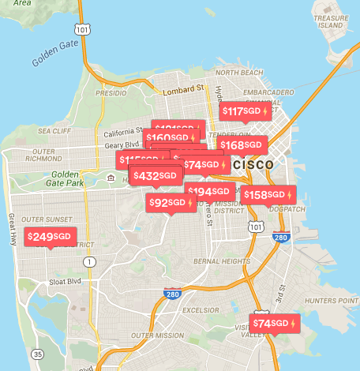
Acquiring the Data
Thanks to Murray Cox, there is extensive Airbnb data available online. From the numerous data fields, we will focus on 4 areas:
a) Listings attributes - Fields that present the various attributes of the listing, including location, home type, price, amenities, capacity, costs, etc.
b) Host attributes - Detailed information on the quality and behavior of the Airbnb host.
c) Text descriptions - Extensive text data describing details of the home, neighbourhood, means of transport, etc.
d) Ratings and reviews - Review scores covering various aspects of the listing, such accuracy, cleanliness, check-in, communication, location, and value.
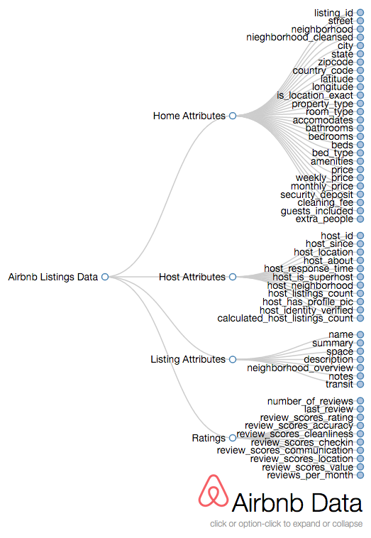
Focus on the SF Airbnb Community
SF is the home city of Airbnb, and is currently one of the most fascinating real estate markets in the world. With the tech industry fuelling housing prices and rentals, Airbnb has grown into a way which homeowners list their homes or rooms for short-term stays in order to parlay their housing costs. The Airbnb landscape is comparatively developed in SF, which makes it a suitable city to study as a mature listings community.
Visualizing the Maturation of the SF Airbnb Community
Using the latitude and longitude fields, we are able to geographically plot the listings and observe the distribution of listings in San Francisco. In general, the listings are concentrated in the north-east region of the city, with an outward radial dispersion towards the west and southward areas. Clustering the listings using DBSCAN, we are able to observe that there is a extended saturated region in the central to north-eastern part of SF. with the city fringes as perpheral clusters.
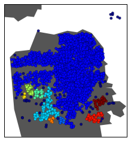
Affordable Price for SF Listings
Charting a density scatterplot by price vs. popularity, we observe that listings tend towards the $50 to $150 per bed range. This is interesting, as it suggests that many Airbnb listings are offered as lower-end accomodation, and compete on a different price point as compared to hotels.
Defining Popularity
As a proxy for popularity, we will use the field “reviews per month”. Looking at the summary statistics of “reviews per month”, we can see that the 75th percentile of reviews is at 2.76 per month, so we will define popular as say, 3 or more reviews per month.
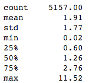
Dimensionality Reduction
To condense the number of fields to facilitate analysis. Using Principal Component Analysis, we reduce the dataset into 10 fields:
- ID
- Latitude
- Longitude
- Location
- Space
- Price
- Description
- Host
- Rating
- Reviews Per Month
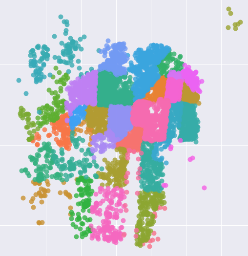
Correlations of Attributes
By plotting a correlation matrix, we can observe the relations of the fields between each other. We can observe that the field with the strongest correlation to popularity is host-relevant fields. It was also interesting to note that the data field pairs of price:space and host:rating had strong correlations with each other.
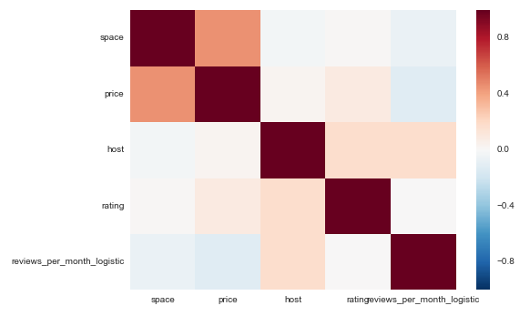
Pricing: A Key Determinant of Popularity
Fitting the price data to a logistic regression showed that if a listing was priced beyond a certain point, an Airbnb listing was bound to be unpopular. At the same time, high-priced listings might have intended to position themselves as high-margin and low-volume.
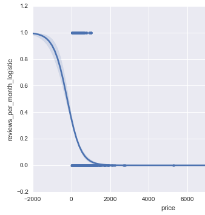
Three Pricing Clusters
Applying K-means clustering, we are generally able to observe three pricing tiers—budget range (blue), mid-end range (green), and high-end range (red). The high-end listings were essentially outliers, priced far above the rest of the listings.
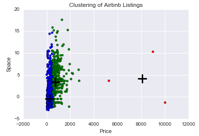
Rule of Three
Computing the silhouette score hockey stick curve, we can see that the SC of k=3 does not differ much by k=11 as well.
Clustering was useful for discovering archetypes in the data, especially when there were observable distinct groups.
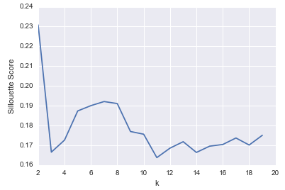
Corroborating with Trees and Forests
Applying decision trees, we found that the RMSE is minimised when max depth was 4, and that rating, price, and host were the most important factors in determining popularity.
From this, we observed that the main quantitative discriminant of popularity for a new listing might just be price. If it falls within a particular band, it has the chance of becoming popular. Hence, there could be potential to recommend a price band for hosts.
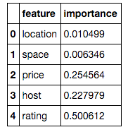
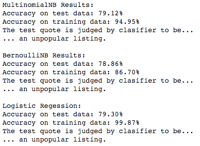
The Text May Tell Us Something
From the structured description data, we were able to apply Naive Bayes to find something interesting. With a ngrams of n=2, we were able to observe that the predictive ability of the vectorised vocabulary is surprisingly high, of up to 70% and above. With the text data, we can predict with reasonable accuracy whether a listing would be popular.
Interesting follow up work could be done to understand the description drafting process. For instance, particular words could contribute to popularity, making it a copywriting problem; the text could otherwise contain nouns and verbs that reflect the inherent popularity of the listings. These could all possibly translate into prompts in the form filling process to support Airbnb hosts' success.
In the meantime, if we could take the description data and run naïve bayes through it, we could have a reasonably good predictor of popularity.
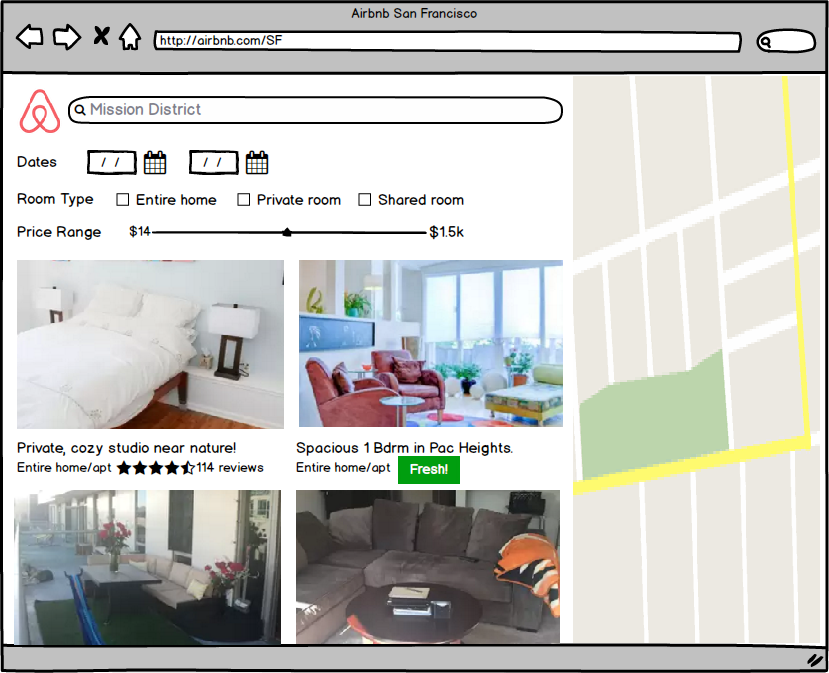
Fresh! Tag For Promising New Listings
To apply the insights to the actual Airbnb platform, we could possibly use the description field as a predictor of the popularity of new listings. For listings that have a good chance of becoming a popular listing, the Airbnb platform should promote them as a "Fresh!" listing, in place of rating stars and review counts to give them higher odds of being considered by an Airbnb user.
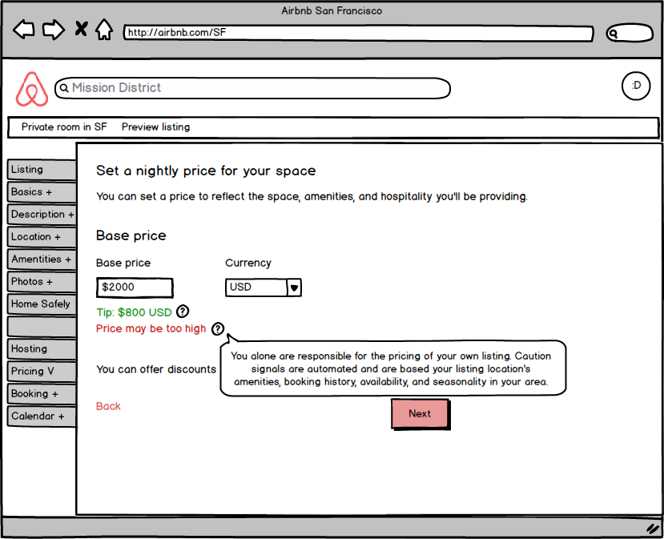
Suggest a Listing Price Limit
Airbnb could display a caution when an Airbnb host attempts to overprice a listing. This will help hosts better price their listings to give themselves the best chance for popularity.
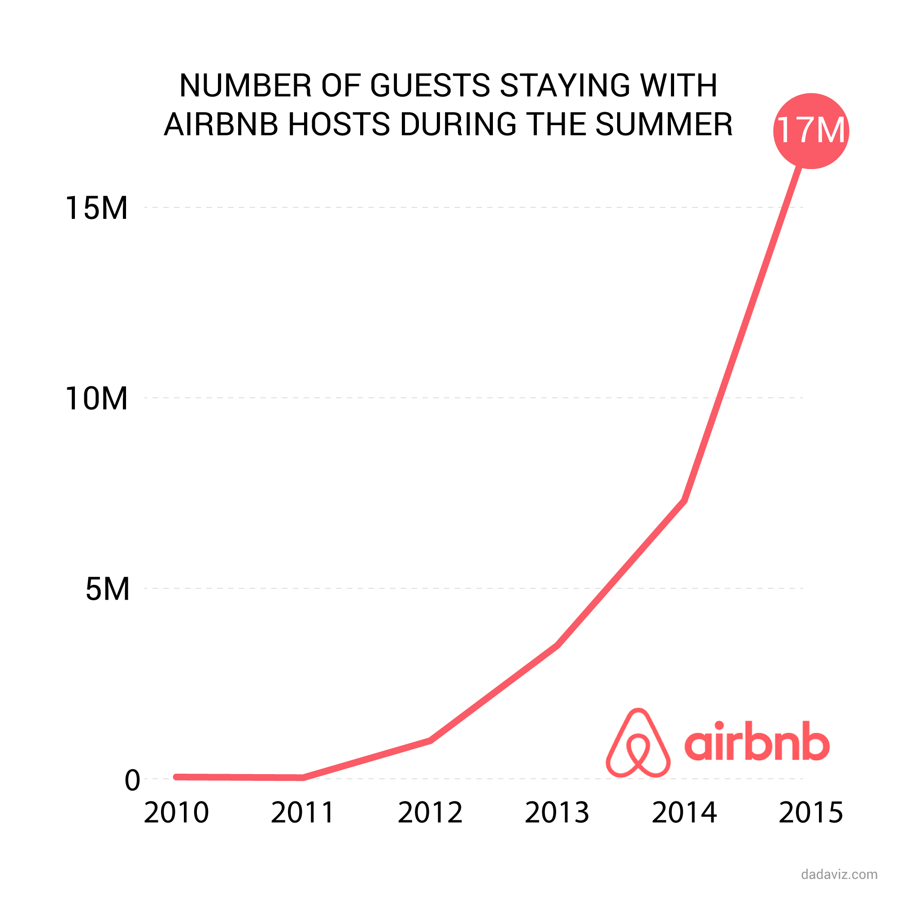
Source: Business Insider
Conclusion
In the past 5 years, the growth of Airbnb has been rapid. Going forward, there will be a need to prempt any constraints to scaling further, and besides making regulatory inroads, the continued growth of the Airbnb host community will be key. As the host community matures over the coming years, there will be a need to implement mechanisms for new and promising hosts to have good odds of building up a great track record. Applying data science techniques to publicly available data, we are able to suggest some small steps to do so.


{kind=link}